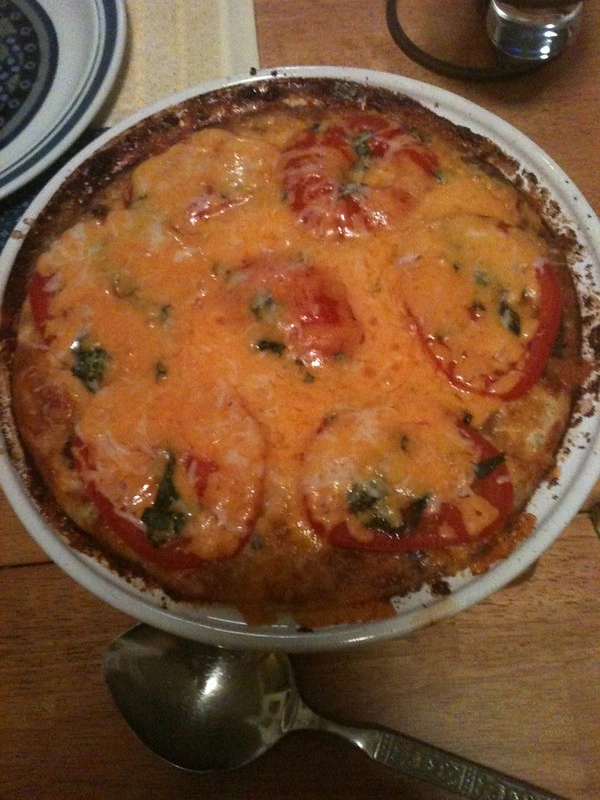

Cheeseburger Pie

"Cheeseburger Pie" by Steven James P
, Licensed CC BY 2.0.
Cheeseburger Pie Recipes
This easy cheeseburger pie with lean ground beef, biscuit mix, onions, and Cheddar cheese bakes in the oven in just 25 minutes. It's just like a cheeseburger but eaten with a fork!
Ingredients
- cooking spray
- 1 pound lean (at least 80%) ground beef
- 1 large onion, chopped
- 1 cup milk
- ½ cup Original Bisquick® mix
- 2 large eggs
- ½ teaspoon salt
- 1 cup shredded cheddar cheese
Steps
- Preheat the oven to 400 degrees F (200 degrees C). Spray 9-inch glass pie pan with cooking spray.
- Cook beef and onion in a nonstick skillet over medium heat, stirring occasionally, until beef is browned and crumbly, 8 to 10 minutes.
- Meanwhile, whisk milk, Bisquick, and eggs together in a small bowl.
- Drain beef and onion mixture; transfer to the prepared pie pan. Stir in salt, sprinkle with Cheddar, and pour Bisquick mixture over top.
- Bake in the preheated oven until a knife inserted in the center comes out clean, about 25 minutes.
Home